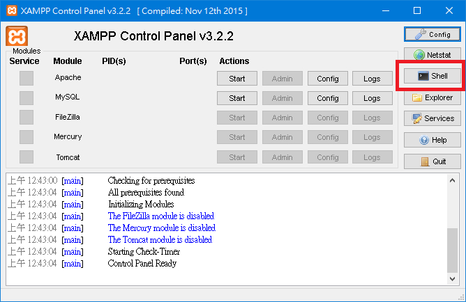

Webpage Design 5
政治


專案
分組名單已經出來了
環境
- Ip Address => 140.123.175.101
- Server => Nginx
- Http => 8080
- PHP 5.6
- Mysql 5.7
帳密
- Accout => teamXX [ XX <= [01,02 ... 10] ]
- Password => 每組不一樣，選一個組長找我拿
SSH、資料庫 同一組
No FTP
Just Git
Just Git
Just Git
Just Git
Server
Checkout here
Clone this
git clone <team>@140.123.175.101:/www/<team>/.git
Git
Get Started
# 初始化一個版本庫
git init
# 複製遠端的本庫
git clone
Remote
# show 出所有的 remote
# origin 預設是你 clone 的來源
git remote -v
git remote add <name> <source>
git remote remove <name>
git remote set-url <name> <new_source>
Information
# 目前工作區的追蹤狀態
git status
# 所有 commit 紀錄
# HEAD 為當前的 commit
# HEAD^ 為上則 commit
git log
# commit 的變更
git show <commit>
Commit
# 追蹤檔案
git add <path>
# Commit
git commit -m <message>
# 切換版本
git checkout <commit>
# 單個檔案
git checkout <file> <commit>
Branch
# 查看分支
# 主線叫做 master
git branch
# 新增分支
git branch <branch_name>
# 刪除
git branch -d <branch_name>
# 切換分支
git checkout <branch_name>
合併 branch (Merge)
# 在 master
git merge <branch_name>
Conflict
以 PHP 為例
<?php
<<<<<<< HEAD
// 在 HEAD 中的程式碼
=======
// 在 branch 中的程式碼
>>>>>>> branch
?>
- 將檔案編輯成目標
git add <name>git commit- 完成
Commit 打錯怎麼辦？
# 回復到上則 commit
git reset HEAD^
# 包含檔案內容
git reset HEAD^ --hard
同步遠端版本庫
# 上傳
# 如果遇到衝突，要先 pull
git push <remote_name> <branch_name>
# 強制更新
git push <remote_name> <branch_name> -f
# 下載
# 如果有衝突，處理如同 Merge
git pull <remote_name> <branch_name>
MySql

登入
# -u 使用者
# -p 使用密碼
# -h 連接遠端
mysql -u <account> -p -h 140.123.175.101
備分
mysqldump -u <account> -p -h 140.123.175.101 <database> > <output_file>
匯入
mysql -u <account> -p -h 140.123.175.101 <database> < <output_file>
查詢
# 看所有資料庫
MySQL [(none)]> show database;
# 選擇資料庫
MySQL [(none)]> use test;
# 看所有 table
MySQL [test]> show tables;
# 看 table 設定
MySQL [test]> show columns from table;
Create Table
CREATE TABLE table_name(
id int AUTO_INCREMENT NOT NULL,
name var_char(255) NOT NULL
)
插入資料
CREATE TABLE table_name(
id int AUTO_INCREMENT NOT NULL,
name var_char(255) NOT NULL
)
資料庫行為稱為 CRUD
- Create
- Read
- Update
- Delete